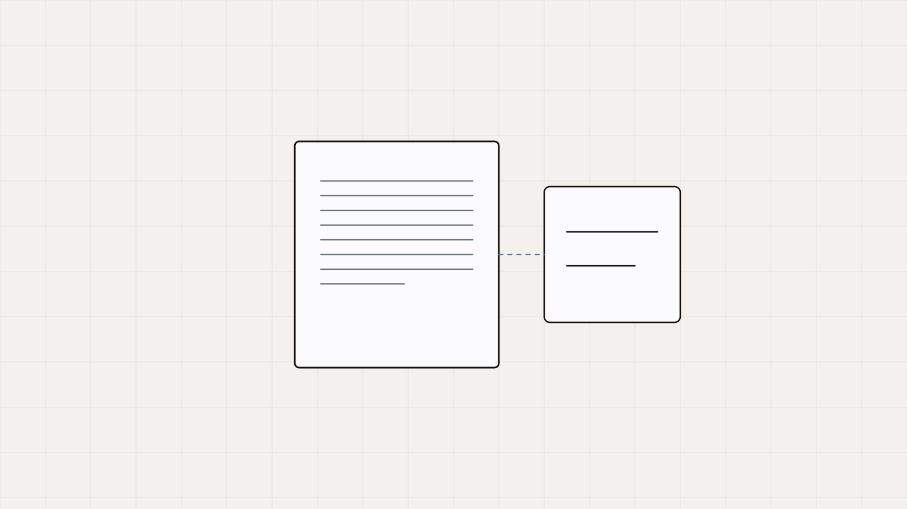

{{TITULO}}
{{ENTRADILLA}}

Párrafo de arranque. Entra en materia en la primera línea: nada de «en el mundo actual del autotransporte». El cuerpo va en gris y los encabezados en tinta — ese contraste es el que hace que la página se pueda escanear.
Un encabezado de sección, en serif
Los <h2> llevan mucho aire encima a propósito: son la
estructura que se lee antes que el texto. Dentro del párrafo se puede
poner una idea en negritas y un
enlace a la fuente primaria, que va
subrayado fino.
Una sub-etiqueta que encabeza una lista
El <h3> no es serif: es sans, 16.5 px, semibold.
- Viñeta corta, de una línea o dos.
- Sin punto final si es un fragmento; con punto si es una oración.
- Entre tres y cinco por lista.
Después de la caja se explica qué implica la norma en la operación real: qué tiene que existir en el expediente para que eso se sostenga.
Una frase del artículo que resume la tesis en menos de veinte palabras.
Opcional: a quién se le atribuye
| Concepto | Qué se necesita probar | Plazo |
|---|---|---|
| Renglón A | Qué documento lo sostiene. | 72 h |
| Renglón B | Qué documento lo sostiene. | 30 d |
Nota de cifra: de dónde salió el número del párrafo anterior. Ej.: censo propio de Likida, 1,318 vacantes verificadas de 829 empresas de transporte.
- Ordenamiento o publicación, artículo, fecha — enlace a la fuente primaria.
- Censo propio de Likida, agosto 2026.
{{PREGUNTA_CIERRE}}
Contáctanos